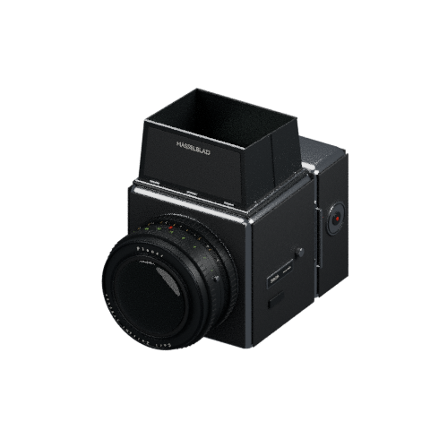
MEDIUM FORMAT / 6 × 6
Hasselblad 500C/M
A12 back · Planar 80mm · Waist-level finder
THE COLLECTION
Inside the site these are 3D models you can turn in your hand. Here they are laid out flat: what each camera is, and what each film stock does to a photograph.

MEDIUM FORMAT / 6 × 6
A12 back · Planar 80mm · Waist-level finder
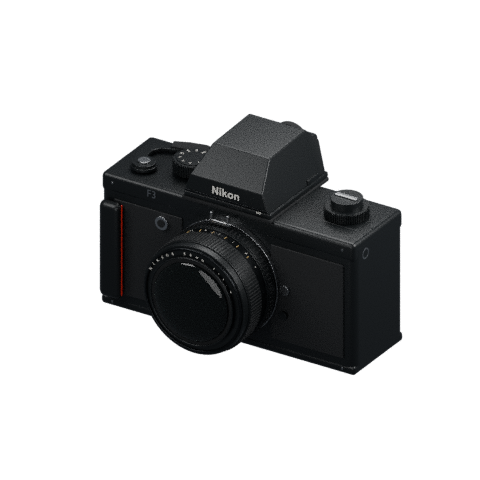
35 MM / SLR
DE-3 high-eyepoint finder · Nikkor 50mm
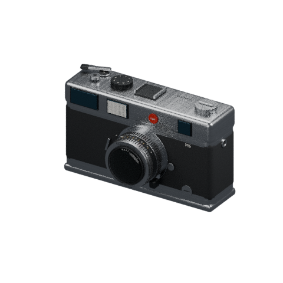
35 MM / RANGEFINDER
Rangefinder · Manual focus
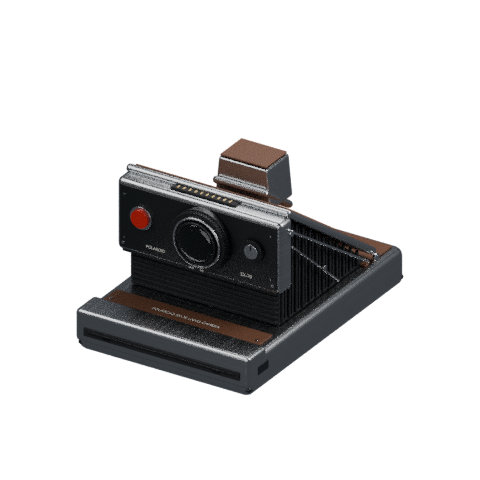
INSTANT / FOLDING SLR
Folding body · Integral film
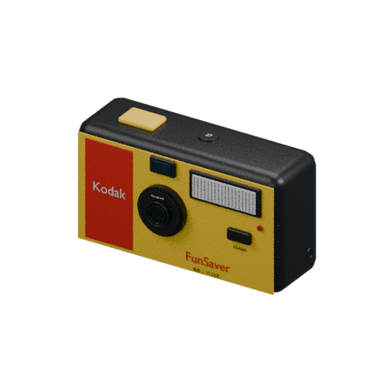
35 MM / SINGLE USE
Fixed-focus lens · Built-in flash
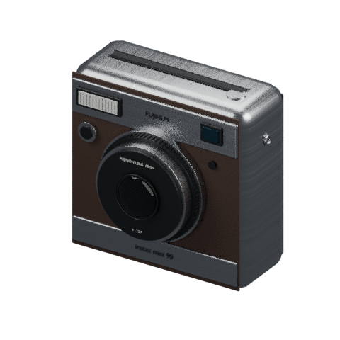
INSTANT / MINI
Retractable lens · Instant prints
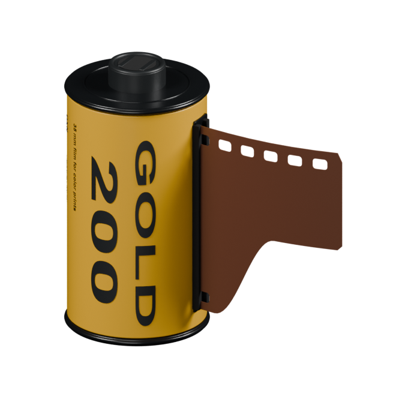
35 MM / COLOR NEGATIVE
Gold 200 cassette · 36 exposures · C-41
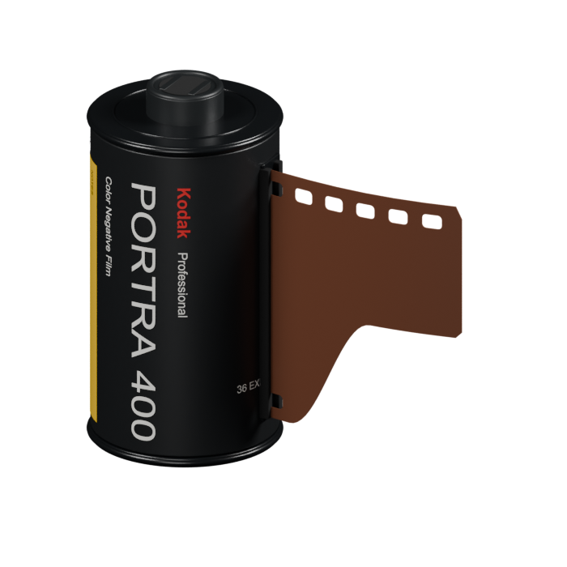
35 MM / COLOR NEGATIVE
Black-label Portra cassette · 36 exposures · C-41
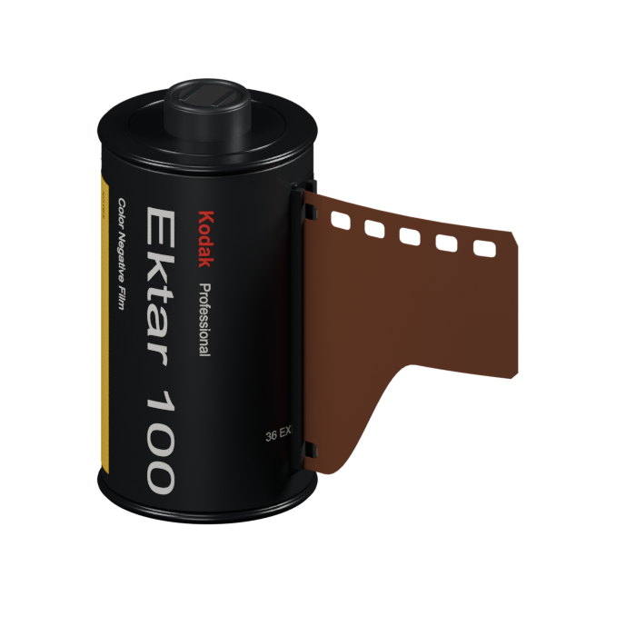
35 MM / COLOR NEGATIVE
Fine-grain color film · 36 exposures · C-41
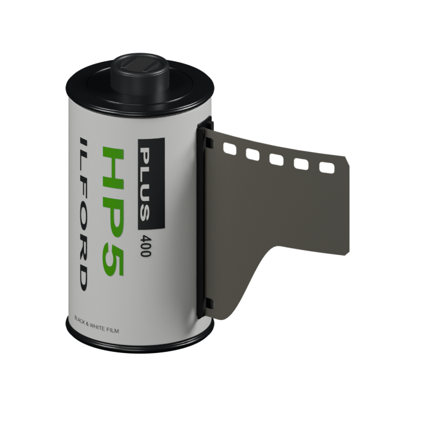
35 MM / BLACK & WHITE
ISO 400 · White / green label · DX cassette
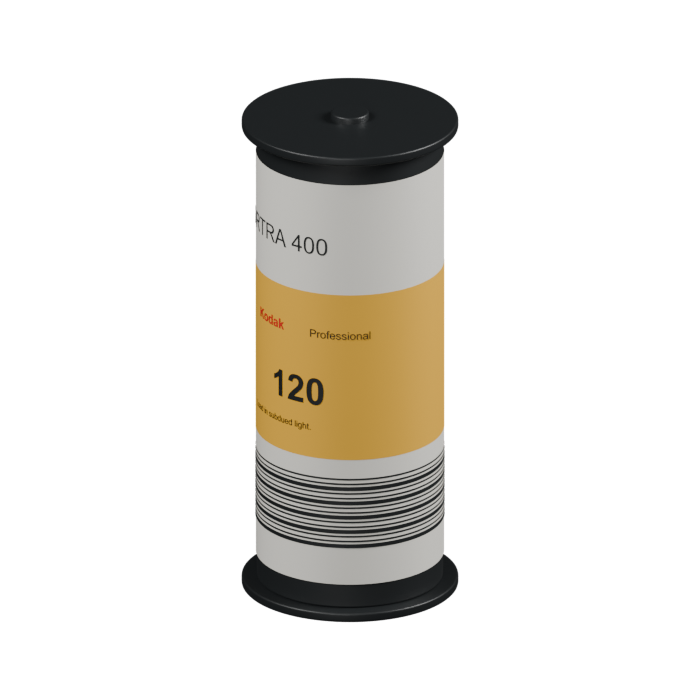
120 / COLOR NEGATIVE
Paper-backed roll · Flanged spool · C-41
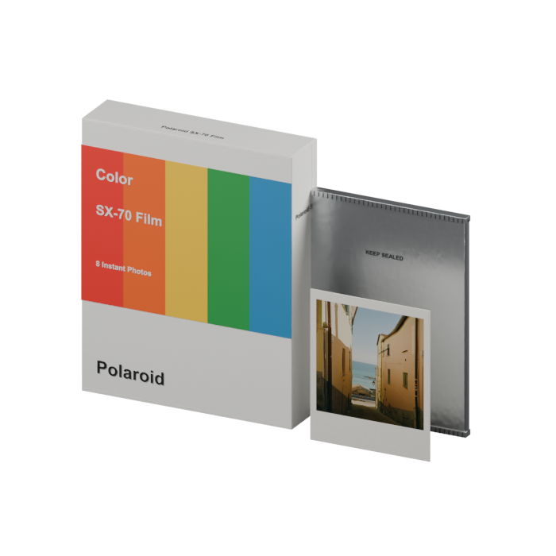
INSTANT / SX-70
8 photos · Foil pouch · Square image
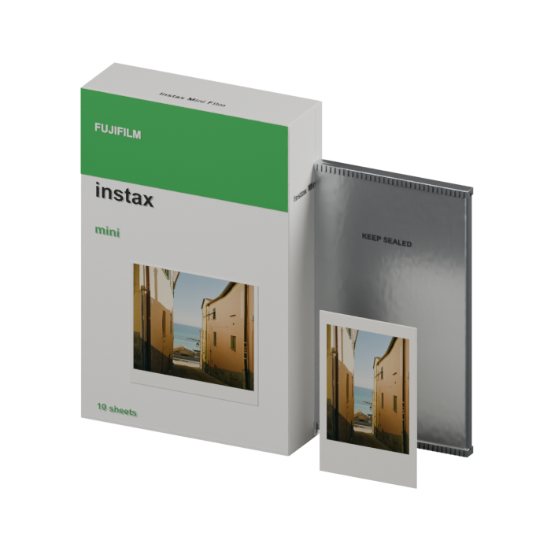
INSTANT / MINI
10 sheets · 54 × 86 mm print
The camera decides where you start; the film decides how the photograph ends up looking. Gold runs warm and yellow, made for late afternoons; Portra keeps skin tones gentle; Ektar is the most saturated; HP5 turns everything black and white; the two instant stocks bring a square frame and soft contrast. Choosing a camera in the site also chooses its film.